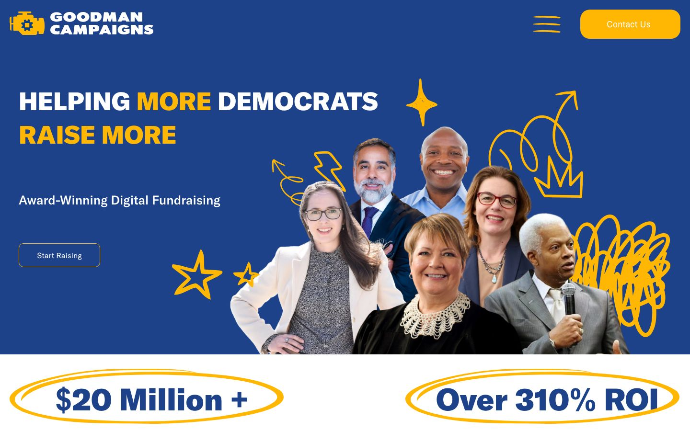
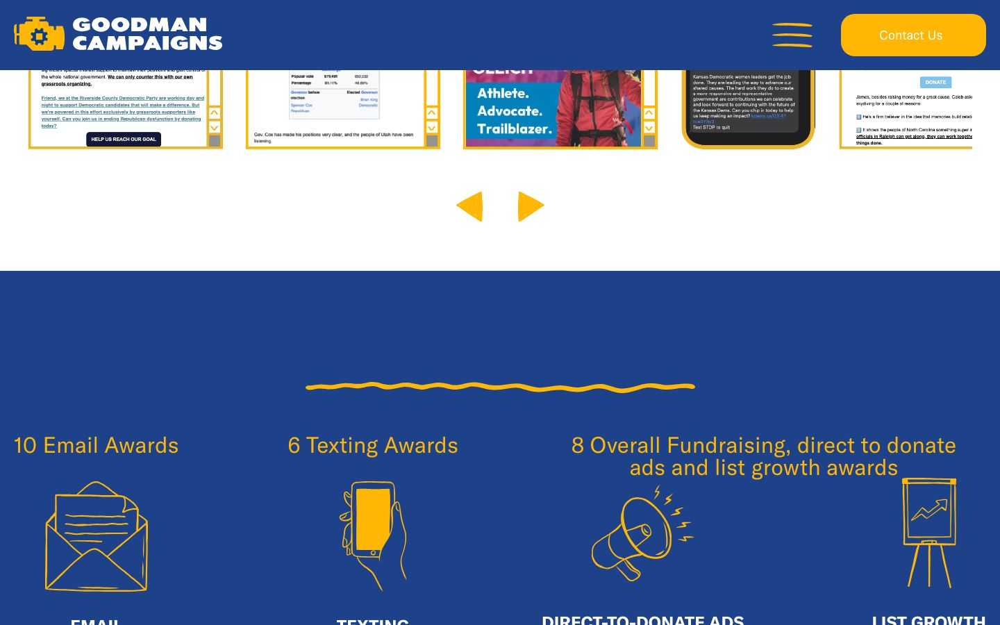
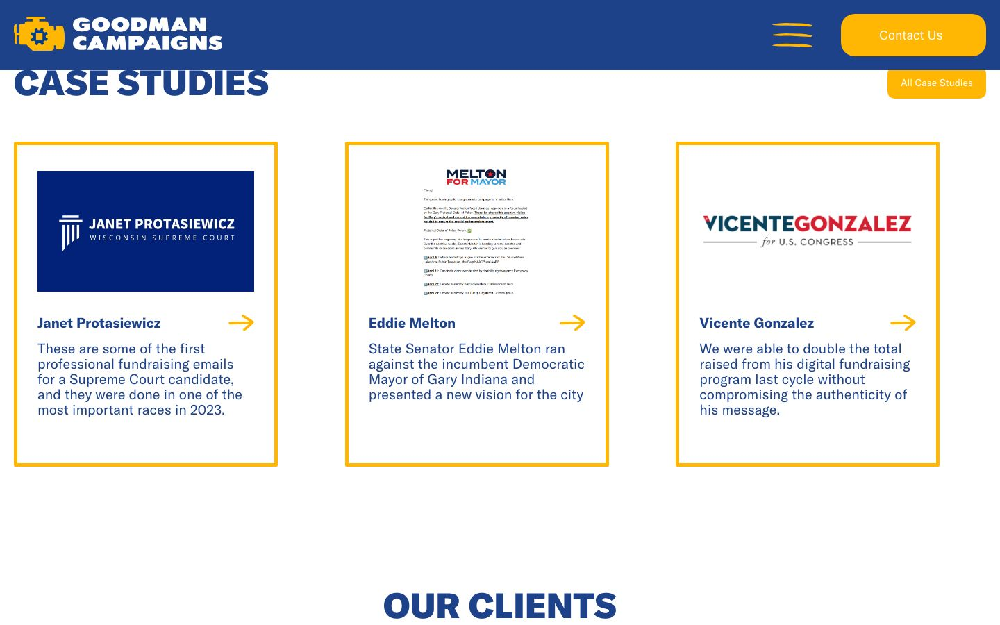
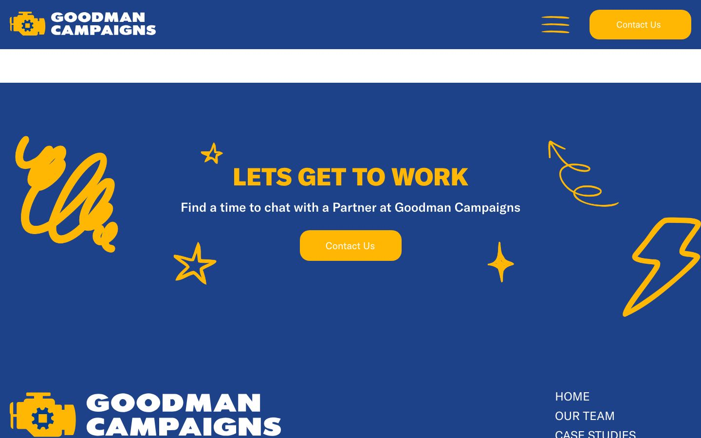
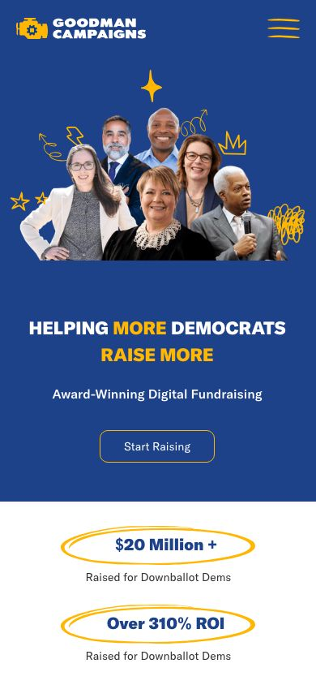

Goodman Campaigns
Political digital fundraising agency
A bold, results-first website for a digital fundraising agency that helps downballot Democrats raise more.

- Client
- Goodman Campaigns
- Sector
- Political campaigns & fundraising
- My role
- Designer and developer
- Services
- Website design and build
- Engagement
- Independent, outside 97 Switch
The project
Goodman Campaigns is a digital fundraising agency for Democratic campaigns, specializing in email, texting, direct-to-donate ads and list growth. I designed and built its website independently of 97 Switch.
The challenge
A fundraising agency sells on proof. The site had to put results, awards and candidate case studies front and center, and give campaigns a clear way to start a conversation, with an energy that fits political work.
What I did
- 01
Results up front
Circled headline figures for money raised and ROI open the page, so the agency's value is clear before anything else is read.
- 02
Award-winning work, organized
Award counts are grouped by channel (email, texting, and direct-to-donate ads and list growth), with a path to see the winners.
- 03
A case study for every candidate
Dedicated case studies, including Janet Protasiewicz, Eddie Melton and Vicente Gonzalez, show the strategy and the outcome for real races.
- 04
A brand with energy
A confident blue and gold palette, hand-drawn doodles and a clear Start Raising call to action keep the site bold and approachable.
The live site





Results
- $20M+Raised for downballot Democrats
- 310%+ROI
- 24Awards across email, texting and fundraising
Figures are Goodman Campaigns' own, as published on its website.
Next project
Great Society Strategies